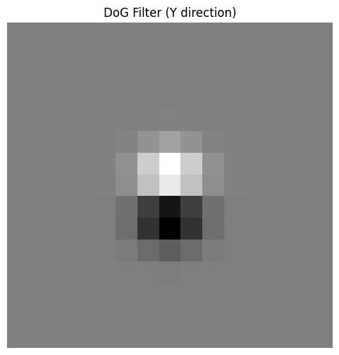

This project used different filters and frequencies of images to create different effects. First, we used filters like finite differences and Gaussian filters to get the edges of images. In the next part of the project, we used unsharp masking to make images more crisp. Next, we created "hybrid images" by combining low and high frequency images. Finally, we leveraged multi-resolution blending to create a "blended" image that smoothly combines parts of two different images.
We apply simple finite difference filters to find the image's gradient in the x and y directions, then calculate the gradient magnitude and adjust the threshold to create a clean edge image that shows real edges without too much noise.

We reduce the noise by first blurring the image with a Gaussian filter, then applying the same process as before to find the gradients.


Next, instead of applying the Gaussian and finite difference filters separately, we create Derivative of Gaussian (DoG) filters by convolving the Gaussian with the x and y difference operators.



To sharpen a blurry image, we first apply a Gaussian filter to create a blurred version, then subtract this blurred image from the original to isolate the high frequencies. We then add the high frequencies back into the image, enhancing sharpness.
Hybrid images combine the low-frequency (blurred) part of one image with the high-frequency (detailed) part of another, creating an effect that changes based on viewing distance. Up close you see the detailed image, but from far away you see the blurred image.
(For the following hybrid image — we here have the FFT of the two input images, the filtered images, and the hybrid image)
Here, we implement Gaussian and Laplacian stacks, which are kind of like pyramids but without the downsampling. This helps us create the blended "oraple".
We create two more blended images using the Gaussian/Laplacian stacks developed in the previous section.